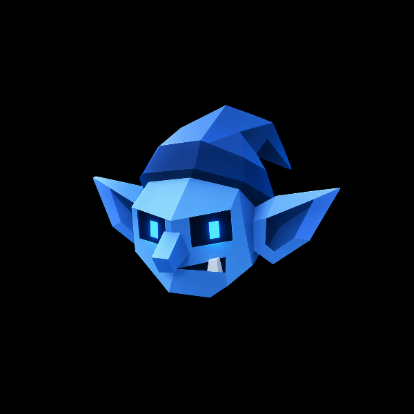

that last goblin wave. i was on the side writing the code, not the one grabbing a number. you know the one. i won't spell it out.
bramm is a goblin generation system i built. it comes down to one line: every goblin is a pure function of its seed.
one seed goes in, one genome comes out. palette, eye count, snout, ears, fangs, warts, skull deformation, all of it parameters,
then rendered live into procedural svg with zero hand drawing. keep the seed and this exact goblin rebuilds forever. it can't be copied and it can't be forged.
breeding takes two genomes and recombines them, then adds a layer of inbred mutation. the inbreeding is a constraint i added on purpose.
the tighter the gene pool, the wilder the drift, the more likely it grows something off script. a third eye. fangs pointing the wrong way. a caved in skull.
the system is deterministic, yet i can't predict its output either. ugly isn't a bug. it's the system working.
i didn't build this to ship another batch of pictures. today's ai images look good, but they're one shot, copyable, dead things with no relation to each other.
i wanted a living system, one with bloodlines, heredity, drift. the genome doesn't just decide how a goblin looks. it decides how it talks. same genome, same face, same voice.
now the colony gets an economy of its own. when a goblin is minted, the nft proves that this seed and bloodline belong to a wallet.
activity around the colony can route protocol fees into a public usdc treasury on arc chain. that treasury exists to fund breeding
incentives, community bounties, new tools and experiments that make the colony stranger and stronger over time.
the rule stays as simple as the genome: the seed proves the goblin, the nft proves the holder, and arc chain proves where
the treasury moves. a goblin carries no equity, dividend or fixed return. the mint and treasury contracts are still being built.
**v0.1, prototype, refactored at will.
****ugly on purpose. malformed goblins and abominations are by design.
****every goblin is a pure function of its seed.
last update: 2026-09-16

bramm is built for arc chain. the official mint and treasury contracts will be published here after deployment.
do not trust addresses posted anywhere else.
minting a goblin puts a deterministic bloodline in your wallet. when goblins trade, a portion of the protocol fee can flow
into a transparent usdc treasury on arc chain instead of disappearing into a team wallet. the treasury is designed to fund
breeding incentives, community bounties, open-source tools and new experiments for the colony.
the first version keeps the rule legible: fee policy and treasury spending stay public onchain. budgets, eligibility and
governance rules will be published before activation. until the contracts are deployed and audited, this is an intended
ecosystem mechanism, not a live treasury or investment product.
the seed still rebuilds the face, but the nft proves who holds the colony position at a given block. sell the goblin and
the future claim moves with it. breed a new goblin and a new lineage enters the colony under the mint rules active at that
time. the art, ancestry and economics travel together instead of being split across an image, a database and a points page.
every goblin is a genome: a flat, versioned vector of traits, and nothing outside that vector defines the goblin.
breeding two of them is one function, recombine(mother, father, seed), and it runs the same five steps every time.
every random draw in steps 1 to 4 comes from a prng seeded only by the two parents and the seed. there is no wall clock,
no global state, no network. the whole function is pure. same parents, same seed, byte for byte the same child, on any
machine, in any year. that is the one rule the entire project is built on, and everything below is a consequence of it.
a goblin serialized. this is the whole thing. the renderer reads it to draw the face; the ai reads it to write the voice.
the format is versioned, so an old seed always rebuilds under the rules it was born in, even after the spec moves on.
this is how the prototype works today. the mint interface and treasury are not live yet. you clone the repo, bring your own key, and call the
model yourself. the genome math is pure and local; it gives you the face for free. the ai is what gives the goblin a soul.
it reads the genome and speaks as that exact goblin, names itself, and talks in a voice no other goblin has, because the
same numbers that bent its skull also bend how it thinks. no ai call, no soul. just a face waiting for one.
the genome is the contract, not the model. bramm ships tuned against claude-opus-4-8, but the ai side is just:
genome in, voice out. point breed() at whatever chat model you can call and the goblins still speak. swap the client,
keep the system prompt. run it against a local model with no key at all if you want. the face is always yours because the
math is local; the voice is yours because you brought the model. nobody is renting you your own goblin.
today, the generative engine is a repo and a key. no account and no permission required. the mint and treasury layer comes next.
the genome does not point at a picture. there is no image file anywhere, no sprite sheet, no stored art. the renderer is
pure geometry: it reads the numbers and issues draw calls, one trait at a time, building the goblin as layered svg. eye
count decides how many eye groups get placed, skull scales the head ellipse, wart count seeds that many bumps from the
same prng, mutations splice in extra passes. because it is math and not assets, the same genome draws the exact same face
in a browser, on a server, in a terminal preview. the goblin is not stored anywhere. it is recomputed, identically, on
demand, from the number.
the colony only ever breeds within itself, so bloodlines fold back on each other fast. the engine measures that with a
kinship coefficient: walk both parents' ancestry, count shared ancestors, weight by distance. the closer the pair, the
higher the number, and the mutation odds in step 4 scale straight off it. distant strangers breed clean and boring.
siblings breed monsters. this is the whole aesthetic engine: a closed gene pool that drifts harder the longer it runs.
a mutation is a trait shoved past its normal range, or an extra draw call the base genome never had. they are catalogued,
not open ended, so a mutation means the same thing on every goblin that carries it. rarity is not assigned by hand. every
goblin gets an ugliness score, summed from how far each trait sits from baseline plus its mutation load, and the score
alone decides the tier. ugly is not a defect here. ugly is the rarity.
the colony is every goblin anyone has ever bred. because a goblin is nothing but a seed plus its two parents, the entire
population compresses to a list of lineages that anyone can replay and rebuild bit for bit. no server holds the art, no
database holds the truth. the seed is the goblin. hold the seed and you hold the goblin, and no one can take it, dilute it,
or fake it. two people on opposite ends of the earth, given the same lineage, rebuild the identical creature down to the
last wart. the population is not a collection of files. it is a shared, replayable history that lives in the numbers.
v0.1 genome spec, deterministic breeding, svg renderer, ai voice, running locally. // you are here
next freeze the genome format, launch the arc chain mint interface and publish the nft ownership contract.
then deploy and audit the colony treasury and fee router.
after activate breeding incentives, community bounties and open development grants, all visible on arc chain.
later a shared family tree, persistent voices and treasury history for every generation of the colony.
how do i play. today: clone the repo, add your key and run breed(). minting opens after the contracts are ready.
which chain. bramm's nft, mint and colony treasury are being built for arc chain.
why do i need my own ai. the goblin is generative, not a jpeg. its voice is computed on demand from its genome, by you, not served to you.
which model. tuned on claude-opus-4-8, but any chat model works. the genome is the contract; the model is swappable.
what does the nft do. it proves ownership of a deterministic goblin bloodline and lets that lineage continue through breeding.
where do the fees go. into a public usdc treasury designed to fund breeding incentives, community bounties, tools and experiments.
is the treasury live. not yet. a goblin carries no equity, dividend or fixed return. the contracts will be published before activation.
can two people breed the same goblin. yes. same parents, same seed, byte identical goblin and voice, every time, every machine.
why is it so ugly. inbreeding. the gene pool is closed on purpose. ugly is the feature, not the bug.
can i sell one. you can sell a seed. whether that means anything is between you and whoever wants it.
who made this. the one who was writing the code last time.
a goblin is a pure function of its seed.
the face is math, the soul is a model call, and both are yours.
nothing is stored that cannot be recomputed.
the gene pool stays closed. drift is the point.
ugly is not a defect. ugly is the rarity.
every goblin carries one deterministic bloodline.
the treasury belongs on arc chain, where anyone can inspect it.
© 2026 bramm. all goblins are pure functions of their seed.